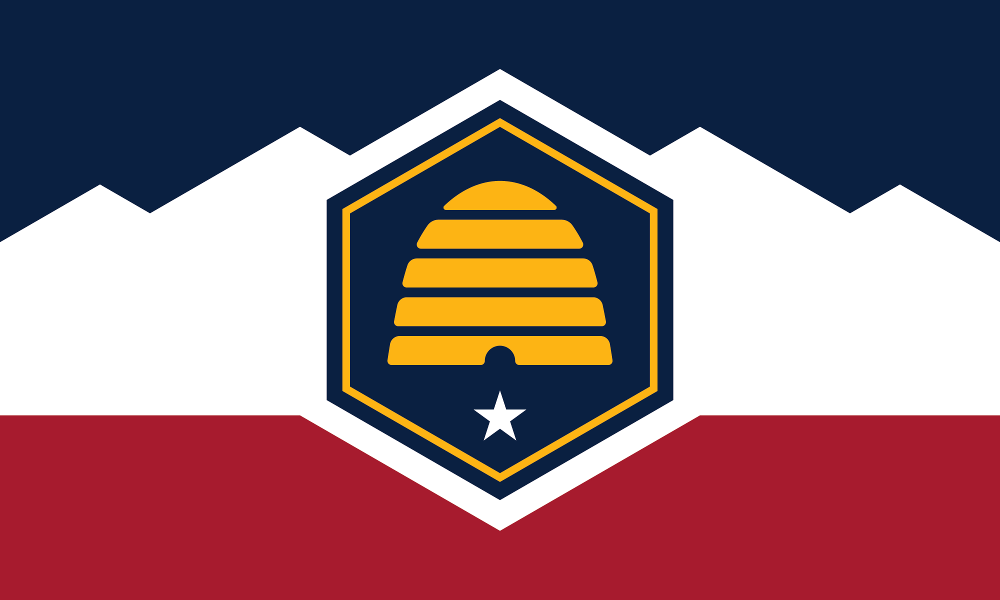

About Me
Hi, My name is Adam Phillps and I am from Lehi, Utah. I am currently taking WDD 131 at BYU-Idaho. I love to watch movies and build with Legos! I also enjoy being with my family and love playing board games and going on lots of trips


Utah
Utah is located in the United States is known for its arch rock formations towards the south and great skiing in the north. It is a very dry climate being in the west and the weather varies from being snowy to sunny. But it offers stunning views of the Rocky mountians with beautfil sunsets and sunrises.